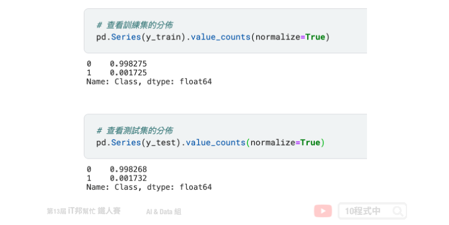
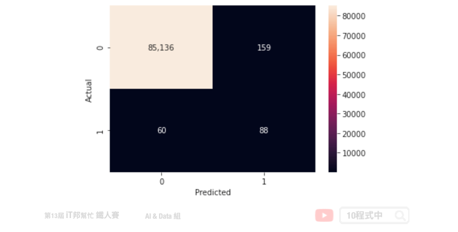

[Day 17] 輕量化的梯度提升機 - LightGBM
今日學習目標
- LightGBM 與 XGBoost 比較
- 了解 LightGBM 優點
- 實作 LightGBM 處理資料不平衡資料
- 信用卡盜刷偵測 (二元分類)
範例程式：
前言
LightGBM 是屬於 GBDT 家族中成員之一，相較於先前介紹的 XGBoost 兩者可以拿來做比較。簡單來說從 LightGBM 名字上觀察，我們可以看出它是輕量化 (Light) 的梯度提升機 (GBM) 的實例。其相對 XGBoost 來說它具有訓練速度快、記憶體佔用低的特點，因此近幾年 LightGBM 在 Kaggle 上也算是熱門模型一。

LightGBM 與 XGBoost 比較
這兩種演算法都使用貪婪的方法來最小化損失函數的梯度來構建所有的弱學習器。其 tree-based 演算法所面臨的挑戰是如何挑選最佳的葉節點的切割方式，然而 LightGBM 和 XGBoost 分別使用不同的優化技術與方法來識別最佳的分割點。
LightGBM 優點
LightGBM 由微軟團隊於 2017 年所發表的論文 LightGBM: A Highly Efficient Gradient Boosting Decision Tree 被提出。其主要想法是利用決策樹為基底的弱學習器，不斷地迭代訓練並取得最佳的模型。同時該演算法進行了優化使得訓練速度變快，並且有效降被消耗的資源。LightGBM 也是個開源專案大家可以在 GitHub 上可以取得相關資訊。
在官方的文件中也條列了幾個 LightGBM 的優點： - 更快的訓練速度和更高的效率 - 低記憶體使用率 - 更好的準確度 - 支援 GPU 平行運算 - 能夠處理大規模數據
LightGBM 使用 leaf-wise tree 演算法，因此在迭代過程中能更快地收斂。但是 leaf-wise tree 方法較容易過擬合。詳細的內容可以參考文章最後提供的相關資源。
處理 unbalance 資料
在使用 LightGBM 做分類器時該如何處理樣本類別分佈不平衡的問題？一個簡單的方法是設定 is_unbalance=True，或是 scale_pos_weight 注意這兩個參數只能擇一使用。以下我們就使用一個不平衡的資料集，信用卡盜刷預測來做示範。首先我們可以載入 Google 所提供的信用卡盜刷資料集，詳細資訊可以參考這裡。
import pandas as pd raw_df = pd.read_csv('https://storage.googleapis.com/download.tensorflow.org/data/creditcard.csv') X=raw_df.drop(columns = ['Class']) y=raw_df['Class'] print('X:', X.shape) print('Y:', y.shape)
載入成功後我們可以看到該資料集共有 284807 筆資料，每一筆資料有 30 個特徵。
X: (284807, 30) Y: (284807,)
為了方便檢視實驗結果，我們依照 y 的比例進行訓練集與測試集的切割。這裡值得一提的是，stratify 為分層隨機抽樣。特別是在原始數據中樣本標籤分佈不均衡時非常有用，一些分類問題可能會在目標類的分佈中表現出很大的不平衡時例如：負樣本可能比正樣本多幾倍。在這種情況下，建議使用分層抽樣。
from sklearn.model_selection import train_test_split X_train, X_test, y_train, y_test = train_test_split(X, y, test_size=0.3, random_state=42, stratify=y) print('X_train:', X_train.shape) print('X_test:', X_test.shape)
輸出結果：
X_train: (199364, 30) X_test: (85443, 30)
訓練集與測試集經由 7:3 的比例下去隨機切割資料。我們可以透過 Pandas 做更近一步的分析，可以發現切割出來的訓練集與測試集在盜刷(1)與非盜刷(0)的資料比例是差不多的。

接下來重頭戲出場。我們採用 LightGBM 分類器，若還沒安裝的讀者可以參考以下指令進行安裝。
pip install lightgbm
安裝結束後即可載入 lightgbm 套件並選用 LGBMClassifier 分類器。另外我們可以在建立分類器同時設定模型超參數，這裡我們來示範使用 is_unbalance=True 訓練模型。除此之外模型的超參數有很多，可以由官方文件中查閱。以下幫各位整理常用的方法：
Parameters: - num_iterations: 總共迭代的次數，即決策樹的個數。預設值為100。 - learning_rate: 學習速率，預設0.1。 - boosting: 選擇 boosting 種類。共四種 gbdt、rf、dart、goss，預設為 gbdt。 - max_depth: 樹的最大深度，預設值為-1即表示無限制。 - min_data_in_leaf: 一個子葉中最少數據，可用於處理過擬合。預設20筆。 - max_bin: 將特徵值放入桶中的最大bins數。預設為255。
Attributes: - feature_importances_: 查詢模型特徵的重要程度。
Methods: - fit: 放入X、y進行模型擬合。 - predict: 預測並回傳預測類別。 - score: 預測成功的比例。 - predict_proba: 預測每個類別的機率值。
import lightgbm as lgb model = lgb.LGBMClassifier(is_unbalance=True) model.fit(X_train,y_train)
訓練結束後即可使用剛切割好的測試集進行模型評估。我們可以發現準確率高達 94%。
from sklearn.metrics import accuracy_score pred=model.predict(X_test) print("Accuracy:", accuracy_score(y_test, pred))
輸出結果：
Accuracy: 0.9401706400758401
如果要判斷分類器的好壞，僅使用準確率來評估是一個不好的習慣。我們應該善用混淆矩陣做更近一步的分析，並查看正樣本與負樣本在預測上的表現。首先我們先來寫一個計算混淆矩陣的函式，並用 seaborn 繪製出熱力圖矩陣。
import seaborn as sns import matplotlib.pyplot as plt def plot_confusion_matrix(actual_val, pred_val, title=None): confusion_matrix = pd.crosstab(actual_val, pred_val, rownames=['Actual'], colnames=['Predicted']) plot = sns.heatmap(confusion_matrix, annot=True, fmt=',.0f') if title is None: pass else: plot.set_title(title) plt.show()
在評估模型之前我們先來查看測試集輸出 y 的分佈各是多少。透過 numpy 的 unique 方法可以計算 y_test 中每個類別的數量。從輸出結果可以得知，85443 筆測試集中共有 85295 筆是標籤 0(未盜刷)、148 筆是標籤 1(盜刷)。知道這些真實數據的數量後，接下來我們就可以透過混淆矩陣來查看模型是否有將這些盜刷的資料被正確預測出來。
import numpy as np unique, counts = np.unique(y_test, return_counts=True) dict(zip(unique, counts))
輸出結果：
{0: 85295, 1: 148}
plot_confusion_matrix 函式建立完成後即可呼叫。此函式有三個輸入，分別為 y_test 實際輸出答案、 pred 模型預測結果、title 圖表標題(預設None)。相對應的變數輸入後即可得到計算好的混淆矩陣。
plot_confusion_matrix(y_test, pred)
下圖為實際 is_unbalance=True 的訓練結果。我們可以發現在測試集中有 148 筆盜刷資料，其中有 124 筆盜刷被成功辨識出來。另外我們可以發現真實答案是沒盜刷的資料居然有 5088 筆被誤判成盜刷。

我們再來試試將 is_unbalance 設為 False 並觀察混淆矩陣。可以發現雖然誤判的數量減少了，但是真實答案中有 148 筆盜刷資料僅有 88 筆被成功辨識出來。我們可以猜想模型在大多數狀況都會預測資料未被盜刷的機率較大。

Reference
本系列教學內容及範例程式都可以從我的 GitHub 取得！